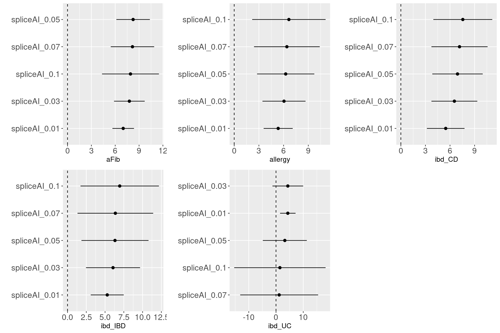
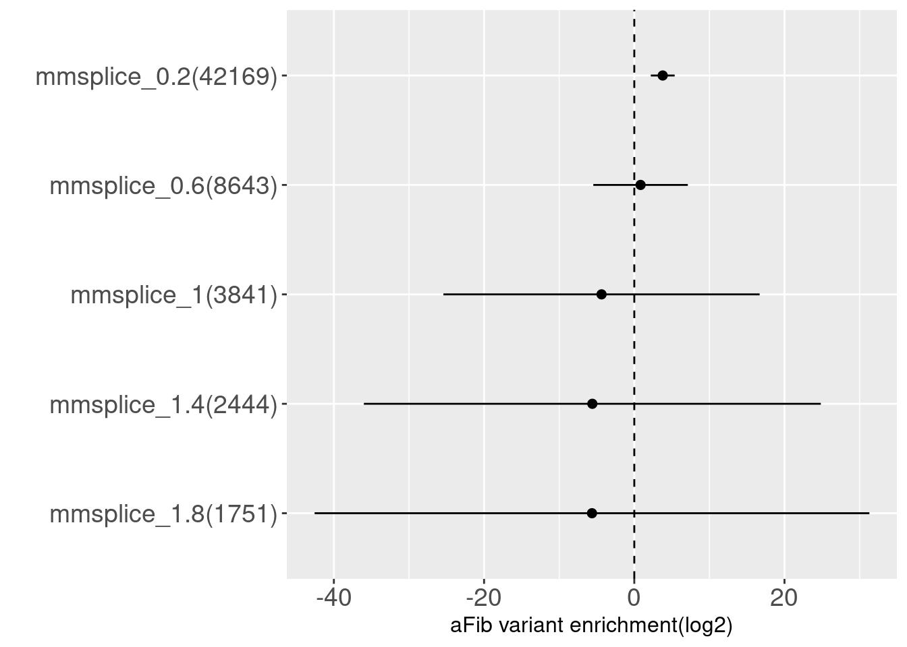
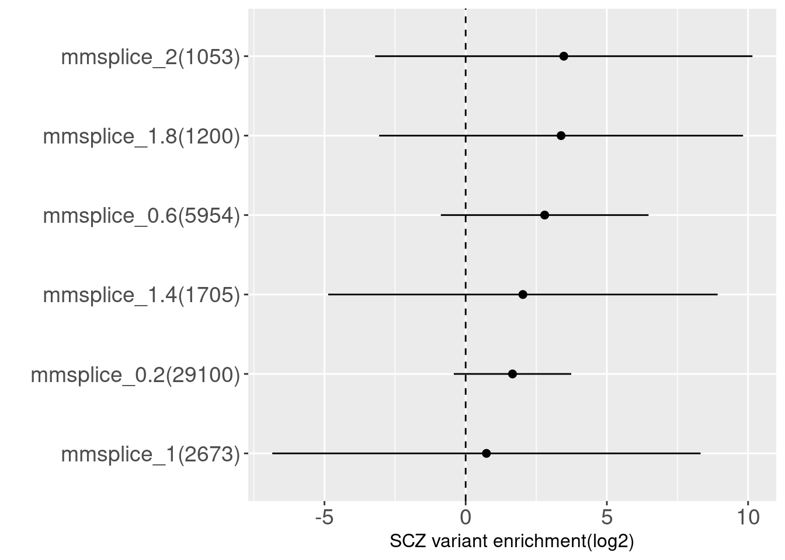

Functional enrichment
Last updated: 2021-09-01
Checks: 6 1
Knit directory: funcFinemapping/
This reproducible R Markdown analysis was created with workflowr (version 1.6.2). The Checks tab describes the reproducibility checks that were applied when the results were created. The Past versions tab lists the development history.
Great! Since the R Markdown file has been committed to the Git repository, you know the exact version of the code that produced these results.
Great job! The global environment was empty. Objects defined in the global environment can affect the analysis in your R Markdown file in unknown ways. For reproduciblity it's best to always run the code in an empty environment.
The command set.seed(20210404) was run prior to running the code in the R Markdown file. Setting a seed ensures that any results that rely on randomness, e.g. subsampling or permutations, are reproducible.
Great job! Recording the operating system, R version, and package versions is critical for reproducibility.
Nice! There were no cached chunks for this analysis, so you can be confident that you successfully produced the results during this run.
Using absolute paths to the files within your workflowr project makes it difficult for you and others to run your code on a different machine. Change the absolute path(s) below to the suggested relative path(s) to make your code more reproducible.
| absolute | relative |
|---|---|
| ~/projects/funcFinemapping/output/scz_lipid_joint_enrichment.png | output/scz_lipid_joint_enrichment.png |
| ~/projects/funcFinemapping/output/scz_bmi_joint_enrichment.png | output/scz_bmi_joint_enrichment.png |
| ~/projects/funcFinemapping/output/scz_immune_joint_enrichment.png | output/scz_immune_joint_enrichment.png |
Great! You are using Git for version control. Tracking code development and connecting the code version to the results is critical for reproducibility.
The results in this page were generated with repository version 4db9eb3. See the Past versions tab to see a history of the changes made to the R Markdown and HTML files.
Note that you need to be careful to ensure that all relevant files for the analysis have been committed to Git prior to generating the results (you can use wflow_publish or wflow_git_commit). workflowr only checks the R Markdown file, but you know if there are other scripts or data files that it depends on. Below is the status of the Git repository when the results were generated:
Ignored files:
Ignored: .ipynb_checkpoints/
Ignored: analysis/ldsc_results.nb.html
Ignored: analysis/results.nb.html
Ignored: analysis/snp_finemapping_results.nb.html
Ignored: analysis/splicing.nb.html
Untracked files:
Untracked: SNPs_categories,png
Untracked: SNPs_categories.png
Untracked: analysis/enhancer_gene_feature.Rmd
Untracked: analysis/feedback.Rmd
Untracked: analysis/gene_finemapping_results.Rmd
Untracked: analysis/learn_susie.Rmd
Untracked: analysis/notes.Rmd
Untracked: analysis/snp_finemapping_results.Rmd
Untracked: analysis/splicing.Rmd
Untracked: code/.ipynb_checkpoints/
Untracked: code/ldsc_regression.sh
Untracked: code/make_plots.R
Untracked: code/run_ldsc.sh
Untracked: code/run_ldsc_with_bed.sh
Untracked: code/run_torus.sh
Untracked: code/split_vcf.sh
Untracked: data/num_overlaps_finemapped_SNPs_and_ctcf.txt
Untracked: data/scz_2018
Untracked: data/torus_enrichment_novel_annot.est
Untracked: data/torus_joint_enrichment.est
Untracked: data/torus_joint_refined_enrichment.est
Untracked: enhancer_gene_feature.rmd
Untracked: fig1_panels.pdf
Untracked: fig2.pdf
Untracked: fig_panel2.pdf
Untracked: gene_mapping.pdf
Untracked: output/joint_history/
Untracked: output/joint_torus_conservation_enrichment.est
Untracked: output/proposal_fig1.pdf
Untracked: output/proposal_fig2.pdf
Untracked: output/proposal_gene_mapping_figure.pdf
Untracked: output/scz_bmi_joint_enrichment.png
Untracked: output/scz_immune_joint_enrichment.png
Untracked: output/scz_lipid_joint_enrichment.png
Untracked: output/torus_enrichment_CDTS_vs_OCR.est
Untracked: output/torus_enrichment_DMR.est
Untracked: output/torus_enrichment_constraints.est
Untracked: output/torus_enrichment_ctcf.est
Untracked: output/torus_enrichment_m6A.est
Untracked: output/torus_joint_refined_enrichment.est
Untracked: output/torus_marginal_enrich_DMR.est
Untracked: output/torus_marginal_enrich_ctcf.est
Untracked: output/torus_marginal_enrich_m6A.est
Untracked: panel_figure2.pdf
Unstaged changes:
Modified: analysis/biology_bkg.Rmd
Modified: analysis/method_bkg.Rmd
Deleted: analysis/results.Rmd
Deleted: data/joint_torus_conservation_enrichment.est
Deleted: data/torus_enrichment.est
Deleted: data/torus_enrichment_DMR.est
Modified: data/torus_enrichment_ambigousSNPs.est
Deleted: data/torus_enrichment_m6A.est
Note that any generated files, e.g. HTML, png, CSS, etc., are not included in this status report because it is ok for generated content to have uncommitted changes.
These are the previous versions of the repository in which changes were made to the R Markdown (analysis/enrichment_analysis.Rmd) and HTML (docs/enrichment_analysis.html) files. If you've configured a remote Git repository (see ?wflow_git_remote), click on the hyperlinks in the table below to view the files as they were in that past version.
| File | Version | Author | Date | Message |
|---|---|---|---|---|
| Rmd | 4db9eb3 | Jing Gu | 2021-09-01 | compute standardized effect sizes |
| html | 05f73e9 | Jing Gu | 2021-09-01 | Build site. |
| Rmd | bed838e | Jing Gu | 2021-09-01 | update evaluations on slicing |
Fine-mapping with functional annotations as priors has shown improved results in identifying causal variants. This project is to evaluate the utility of novel annotation features and adopt ones that can improve fine mapping results.
Evaluations on SCZ summary stats
GWAS summary statistics
Schizopherenia - Pardinas et al., 2018
- 40675 cases and 64643 controls
- CLOZUK sample + PGC sample (independent)
- 179 independent GWAS significant SNPs mapped to 145 independent loci
- SNPs were imputed using a combination of the 1KGPp3 and UK 10K datasets.
- SNPs were filtered by NFO > 0.6 and MAF > 0.01
- LD-score regression analysis: An LD reference was generated from 1KGPp3 after restricting this dataset to strictly unrelated individuals and retaining only markers with MAF > 0.01.
GWAS QC Procedures
- Current procedures was based on Alan's finemappeR pipeline
- Criteria for filtering gwas SNPs
- Remove all non-biallelic SNPs
- Remove all SNPs with strand-ambiguous alleles (SNPs with A/T, C/G alleles)
- Removed SNPs without rs IDs, duplicated rs IDs or base pair position.
- Removed SNPs not in the reference panels
- Removed SNPs whose base pair positions or alleles doesn’t match the reference panels
- Removed all SNPs on chromosome X, Y, and MT
After filtering, there are around 6 million variants remained. 
Procedures
- GWAS summary statistics was pre-processed to remove sex chromosomes, indels, ambiguous and duplicated SNPs.
- Currently, genotypes from 1kg European samples are used to compute LD between SNPs.
- SNPs in GWAS summary statistics were matched with the reference panel and assigned to a total of 1687 independent LD blocks.
- Run TORUS to perform genome-wide enrichment analyses.
Sequence constraints
context-dependent tolerance scores
- context-dependent tolerance scores(CDTS) in percentiles
- A score was computed for each 10bp bin in the genome.
- The lower the score is, the more intolerant to variation is the bin.
How are constrained sequences overlapped with open chromatin regions in iPSC-derived neurons
QCs for brain OCR ATAC-seq peaks
There are very few peaks with size larger than 5kb across different brain ATAC-Seq profiles. The removal of large peaks did not improve the enrichment results.
Overlaps between two sets of genomic features were identified using bedtools intersect. The constrained sequences were counted to be overlapped when at least 20%(>=2 bp) intersect with peaks called from ATAC-Seq profiles. No reciprocal option used here due to the much shorter length of CDTS sequence.
| b_cell | iN_Dopa | iN_GABA | iN_Glut | iPSC | NPC | t_cell | |
|---|---|---|---|---|---|---|---|
| CDTS_1% | 11.3% | 46.9% | 55.6% | 45.4% | 62.2% | 44.2% | 9.4% |
| CDTS_5% | 3.5% | 19% | 21.9% | 15.7% | 25.9% | 14.9% | 2.5% |
| CDTS_50% | 0.4% | 5.8% | 6.6% | 3.4% | 7.8% | 2.9% | 0.1% |
Example of top 1% CDTS sequences and genes nearby
Conserved sequences found in the noncoding regions nearby gene YPEL4, which is a member of the highly conserved YPEL gene family.
Summary-table1:
Overall, CDTS at top percentiles are more enriched in open chromatin regions from brain than immune cells. CDTS at 50% threshold can be regarded as a negative control, which implies that less constrained sequence bins have much less overlapping with OCRs in neurons.
How are the highly conserved CDTS bins overlapping with genomic segments?
Genomic regions were extracted from gencode and processed based on the post from Dave Tang (https://davetang.org/muse/2013/01/18/defining-genomic-regions/). The non-coding CDTS at top 5% were obtained by combining CDTS in top 5% bins completely overlapping both intergenic and intron regions. In total, 91% of original CDTS at top 5% bins are located in the non-coding regions. The intersection of CDTS bins and genomic regions were obtained using the following code: bedtools intersect -a in.bed -b *.regions.bed -wa -wb -f 1
| cds | exon | gene | intergenic | introns | UTR | |
|---|---|---|---|---|---|---|
| CDTS_1% | 16.6% | 38.2% | 79.6% | 19.7% | 61.8% | 15.7% |
| CDTS_5% | 7.7% | 18.4% | 75.7% | 23.7% | 67.4% | 7.3% |
| cds | exon | gene | intergenic | introns | UTR | |
|---|---|---|---|---|---|---|
| CDTS5%_iN-Glut | 7.3% | 30.9% | 76.3% | 23.7% | 68.2% | 16.5% |
| CDTS5%_iPSC | 7.4% | 26.4% | 75% | 25% | 66.8% | 12.7% |
| CDTS5%_B-cell | 7.5% | 36.1% | 74.1% | 25.9% | 65.7% | 20.6% |
Summary-table2
1. Overall, CDTS top percentile bins are mainly located in intron regions, which is consistent with the results in the paper.
2. Around 20% of CDTS bins overlap with exons or intergenic regions.
3. We may look into other annotations such as promoter and enhancers.
Summary-table3
1. The compositions of the CDTS-OCR overlaps in terms of genomic regions are quite consistent across cell types.
2. Generally, there are twice amount of CDTS-OCR overlaps resided in introns than in exons.
Enrichment analysis
- Compare with OCRs in iPSC-derived neurons
| Version | Author | Date |
|---|---|---|
| 05f73e9 | Jing Gu | 2021-09-01 |
The enrichment estimate has a confience level above zero for CDTS and positive controls. This shows SNPs associated with SCZ are on average ~ 9 fold enriched in genomic bins with up to 5 percentile of CDTS.
Compare with intra-species constraints
- LINSIGHT
- predict how noncoding nucleotide sites are likely to have deleterious fitness consequences and hence be phenotypically important
- genome-wide average of LINSIGHT scores was ~0.07 (range: 0.03-0.99)
- Estimated mean LINSIGHT score for conserved TFBSs was 0.24->used as cutoff for whether the nucelotide site is conserved
- 2.5% of GWAS SNPs are above LINSIGHT threshold.
- CADD [Combined Annotation–Dependent Depletion]
- provides metrics of deleteriousness
- scaled PHRED score [-10log10(P)]
- 5% cutoff, which represents top 5% of all possible reference genome SNVs
- GERP [Genomic Evolutionary Rate Profiling]
- produce position-specific estimates of evolutionary constraint
- constraint intensity quantified as a "rejection score" range from -12.3 to 6.17
- UCSC suggests a RS of 2 (high sensitivity and strongly enriched for true constraint sites)
- LINSIGHT
Compare top k-th percentile of CDTS bins vs top k-th percentile scores of other annotations
top5%_CDTS top5%_CADD
top5%_CDTS 1.000 0.108
top5%_CADD 0.154 1.000 top10%_CDTS top10%_LINSIGHT top10%_GERP
top10%_CDTS 1.00 0.01 0.087
top10%_LINSIGHT 0.12 1.00 NA
top10%_GERP 0.12 NA 1.000Summary:
Overall, there is a maximum of 15.4% overlapping between the bases within the top CDTS bins and those ranked among top annotation scores.
Only 1% of bases from top 10% CDTS bins have LINSIGHT scores above 10%, probably due to many missing predictions in LINSIGHT.
The correlation table shows the pair-wise correlations between ranks for the conservation scores on GWAS SNPs across all the annotations. CDTS seems to be uncorrelated to other conservation scores. CADD has a moderate correlation separately with LINSIGHT and GERP. A low correlation observed between GERP and LINSIGHT.
joint enrichment analysis over conservation-related annotations
| Version | Author | Date |
|---|---|---|
| 05f73e9 | Jing Gu | 2021-09-01 |
With other conservation annotations as predictors in the model, we can see CDTS within top 5 percentile still shows around 8 fold enrichment.
3D Genome folding
- Akita is a deep-learning method that predicts variant effects on 3D genome folding
- train Hi-C/Micro C and 1D DNA sequences and then make predictions at variant-level given any DNA sequence
contact maps generated with ref/alt at rs339331
Summary statistics - SNP contact difference scores (SCD)
Only two SNPs are within 95% credible sets
GWAS loci: * 11 24367339 24412992 rs1899543 * 3 17221017 17888256 rs11409090
By overlapping SNPs with a cumulative 95% of posterior probablity and CTCF peaks, I found only 57 out of 6104 the SNPs are within CTCF peaks. The amount of overlapped SNPs increases to 71 if 100bp flanking region incluode or 133 if 500bp flanking region included. flank ctcf_pred ctcfl_pred ctcf_peaks
| ctcf_pred | ctcfl_pred | ctcf_peaks | |
|---|---|---|---|
| flank0 | 39 | 113 | 57 |
| flank10 | 72 | 271 | 59 |
| flank100 | 361 | 1243 | 71 |
| flank500 | 1349 | 3359 | 133 |
Joint enrichment for CTCF-related annotations
| Version | Author | Date |
|---|---|---|
| 05f73e9 | Jing Gu | 2021-09-01 |
DNA methylation
procedure
- concatenate and sort CG DNA methylation regions across 21 clusters
- use
bedtools merge -i merged.bedto merge overlapped regions in the concatenated bed file
- check the distribution of peak lengths
 Joint enrichment results
Joint enrichment results
| Version | Author | Date |
|---|---|---|
| 05f73e9 | Jing Gu | 2021-09-01 |
Post-Transcriptional Regulation
m6A modification
m6A regions across tissues
No differences in enrichment of SCZ risk variants across tissues
Joint enrichment analysis 
| Version | Author | Date |
|---|---|---|
| 05f73e9 | Jing Gu | 2021-09-01 |
Splicing
SpliceAI is a deep CNN method with a ResNets architecture. It provides a general prediction of splicing with precision from an arbitrary pre-mRNA sequence. For each nucleotide in the pre-mRNA transcript, SpliceAI examines 5kb away from it to predict the probability of this nucleotide being acceptor, donor or neither.
Binary annotations at different cutoffs SCZ 
| Version | Author | Date |
|---|---|---|
| 05f73e9 | Jing Gu | 2021-09-01 |
Across tissues 
| Version | Author | Date |
|---|---|---|
| 05f73e9 | Jing Gu | 2021-09-01 |
| Version | Author | Date |
|---|---|---|
| 05f73e9 | Jing Gu | 2021-09-01 |
Joint enrichment results for m6A
m6A features were previously found to be cell type specific. The best tissue for each trait was selected based on Christine's enrichment analyses using S-LDSC.
- BMI - liver
- Height - lung
- HDL - liver
- LDL - liver
- SCZ - brain
- IBD - stomach
Evalutaion Across traits
Refined annotation set for Torus joint analysis
Schizophrenia
| Version | Author | Date |
|---|---|---|
| 05f73e9 | Jing Gu | 2021-09-01 |
Stratified-LSDC results
Procedures
- Built the annotation sets by combining our own refined annotations with the baseline_LD annotations from S-LDSC.
- Computed LD scores for this customized annotation set
- Run S-LDSC using the ldsc.py code from the PolyFun.
- The functional enrichment estimates were based on all SNPs, instead of only commmon SNPs.
- Efficient sample size needs to be considered. (TO DO)
Schizophrenia 
| Version | Author | Date |
|---|---|---|
| 05f73e9 | Jing Gu | 2021-09-01 |
By performing S-LDSC analysis, we see DNA methylation and CDTS annotations shows 6-8 fold enrichment with SCZ variants conditional on all other annotations.
Across traits
Notes
- Annotations with no estimates mean they have negative values.
- If the lower end of 95% confidence interval of an estimate is negative, it will be assigned as 0.05 (-4.3 as log2 based). 
| Version | Author | Date |
|---|---|---|
| 05f73e9 | Jing Gu | 2021-09-01 |
| Version | Author | Date |
|---|---|---|
| 05f73e9 | Jing Gu | 2021-09-01 |
| Version | Author | Date |
|---|---|---|
| 05f73e9 | Jing Gu | 2021-09-01 |
Overall, we see Torus and S-LDSC generates similar enrichment estimates, except for ibd_UC trait. There seems to be some discrepancy in the estimates, which needs a closer look. We so see the performance of annotations varies across traits.
- CDTS at top 5% bins that locate in non-coding regions can better distinguish SCZ from lipid-related trait, but no from bmi, height or immune related traits.
- Human CpG methylations can distinguish SCZ from both immune related traits and lipid-related traits.
- M6A can better distinguish SCZ from immune related traits.
- SCZ variants are not enriched in protein coding regions, while variants associated with all other traits are enriched in protein coding regions.
# gwas<-readRDS("~/cluster/data/gwas/2_Filtered/scz_2018.rds")
# head(gwas)
# intergenic<-read.table("/home/jinggu/resources/genomes/intergenic_hg19_sorted.bed", header = F)
# snpRanges <- make_ranges(paste0("chr", gwas$chr), gwas$pos, gwas$pos)
# snpRanges <- plyranges::mutate(snpRanges, snp=gwas$snp)
# bedRanges<-make_ranges(intergenic$V1, intergenic$V2, intergenic$V3)
# overlaps<-IRanges::subsetByOverlaps(snpRanges, bedRanges)
# subgwas<-subset(gwas, subset=gwas$snp %in% overlaps$snp)
sessionInfo()R version 4.0.4 (2021-02-15)
Platform: x86_64-pc-linux-gnu (64-bit)
Running under: Scientific Linux 7.4 (Nitrogen)
Matrix products: default
BLAS/LAPACK: /software/openblas-0.3.13-el7-x86_64/lib/libopenblas_haswellp-r0.3.13.so
locale:
[1] LC_CTYPE=en_US.UTF-8 LC_NUMERIC=C
[3] LC_TIME=en_US.UTF-8 LC_COLLATE=en_US.UTF-8
[5] LC_MONETARY=en_US.UTF-8 LC_MESSAGES=en_US.UTF-8
[7] LC_PAPER=en_US.UTF-8 LC_NAME=C
[9] LC_ADDRESS=C LC_TELEPHONE=C
[11] LC_MEASUREMENT=en_US.UTF-8 LC_IDENTIFICATION=C
attached base packages:
[1] stats graphics grDevices utils datasets methods base
other attached packages:
[1] ggpubr_0.4.0 gridExtra_2.3 ggplot2_3.3.3 knitr_1.31
[5] data.table_1.14.0 workflowr_1.6.2
loaded via a namespace (and not attached):
[1] Rcpp_1.0.6 tidyr_1.1.2 assertthat_0.2.1 rprojroot_2.0.2
[5] digest_0.6.27 utf8_1.1.4 R6_2.5.0 cellranger_1.1.0
[9] backports_1.2.1 evaluate_0.14 highr_0.8 pillar_1.5.0
[13] rlang_0.4.11 curl_4.3 readxl_1.3.1 car_3.0-10
[17] whisker_0.4 jquerylib_0.1.3 rmarkdown_2.7 labeling_0.4.2
[21] stringr_1.4.0 foreign_0.8-81 munsell_0.5.0 broom_0.7.5
[25] compiler_4.0.4 httpuv_1.5.5 xfun_0.21 pkgconfig_2.0.3
[29] htmltools_0.5.1.1 tidyselect_1.1.1 tibble_3.0.6 rio_0.5.16
[33] fansi_0.4.2 crayon_1.4.1 dplyr_1.0.4 withr_2.4.1
[37] later_1.1.0.1 grid_4.0.4 jsonlite_1.7.2 gtable_0.3.0
[41] lifecycle_1.0.0 DBI_1.1.1 git2r_0.28.0 magrittr_2.0.1
[45] scales_1.1.1 zip_2.1.1 stringi_1.5.3 carData_3.0-4
[49] farver_2.0.3 ggsignif_0.6.1 fs_1.5.0 promises_1.2.0.1
[53] bslib_0.2.4 ellipsis_0.3.2 generics_0.1.0 vctrs_0.3.8
[57] cowplot_1.1.1 openxlsx_4.2.3 tools_4.0.4 forcats_0.5.1
[61] glue_1.4.2 purrr_0.3.4 hms_1.0.0 abind_1.4-5
[65] yaml_2.2.1 colorspace_2.0-0 rstatix_0.7.0 haven_2.3.1
[69] sass_0.3.1